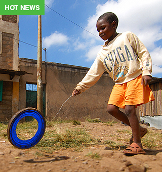
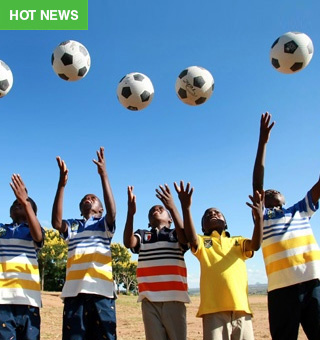
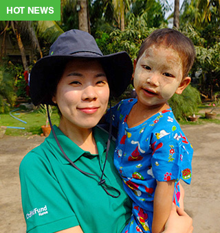
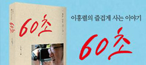
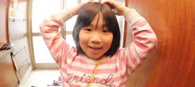
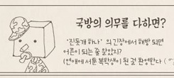
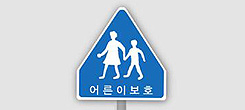
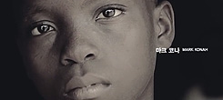
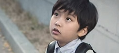
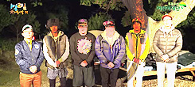

본문 컨텐츠 영역
핫타픽
- 
-
현장소식 [봉사단Dream] #1
듀르벨(Diourbel). 세네갈의 더위를 더욱 유명하게 하는 내륙지역입니다. 수도 다카(Dakar)에서 차로 3~4시간 가량 떨어진 이 곳은 오뉴월의 한낮도 섭씨 40도를 기본으로 넘나들어 사람들을 집으로 몰아 넣습니다. 건조하고 따가운 바람은 사람들뿐만 아니라 가축과 농작물에도...
- 
-
ONE GOAL, ONE DREAM
꿈을 향한 아이들의 리그가 시작된다! 쓰레기를 뭉친공, 쓰러질 듯한 나무 골대가 전부지만 아이들의 리그는 꿈을 향한 열정으로 가득합니다. 축구공만 있으면 모든 곳이 놀이터 입니다. 축구공을 찰 때마다 건강해 집니다. 가난과 질병으로 몸과 마음이 지친 어린이들도 친구들과...
- 
-
어린이재단, 미얀마 방문일기
어려운 상황 속에서도 미소를 잃지 않는 미얀마의 아이들을 만나러 어린이재단이 찾아갔습니다. 어린이재단은 호주의 만달라이와 양곤지역에 있는 9개의 사업지역을 방문하였습니다. 호주는 현지의 10개 파트너 기관과 함께 사업을 진행 중에 있습니다...
초록우산 어린이재단 소개
어린이는 우리의 미래!
아동 복지와 함께한 60년의 역사, 어린이 가 혼자 그리는 그림은 꿈이지만, 어린이와 우리가 함께 그리는 그림은 미래가 됩니다. 어린이 재단은 어린이의 건강한 성장을 도우며 희망찬 미래를 열어갑니다.
초록우산 now, SNS통한 새소식 보기
페이스북
- 
- 60세의 나를 상상하는 일, 행복한 시간이었기를 바라며
이홍렬 홍보대사님의 <60초> 도서를 선물 받으실 당첨자를...
초록우산 facebook Ι July 30 at 4:30 pm - 
- 지금 대한민국에는 집이 없어서 여인숙을 전전하거나,
비닐하우스, 컨테이너 박스 등에 사는 아이들,
장마철만 되면 집에...
초록우산 facebook Ι June 05 at 3:00 pm - 
- 번듯한 대학을 나와, 번듯한 직업을 가진 저자들도
‘나는 아직 어른이 되려면 멀었다’고, ‘천 번을 흔들려야 어른이...
초록우산 facebook Ι June 04 at 1:30 pm - 생애 첫 월드컵에서의 첫 골.
축구선수로 살아가는 동안 가장 영광스러웠을 순간을,
손흥민 선수는 “내가 첫 골을 넣은 게...
초록우산 facebook Ι May 10 at 20:30 pm - 베이비박스에 버려지는 유기 아동들을 위한 기금을 마련하기 위해, 작곡가 겸 피아니스트 이루마와 가수 이정이...
초록우산 facebook Ι May 07 at 5:10 pm
트위터
- 올바른 동계스포츠 OX퀴즈 풀기’에 참여하면 어려운 환경 속에서 꿈을 키워가는 스포츠꿈나무들에게 장학금을 지원할 수 있는 이벤트 진행 중!
초록우산 twitter Ι Sep 06 at 1:30 pm - 국민 5명 중 1명은 어린이입니다. 6.4 지방선거, 투표권이 없는 아동을 위한 복지 공약도 고려하여 한 표를 행사하는...
초록우산 twitter Ι July 30 at 4:30 pm - 1+1은 귀요미보다 더 강력한 공식, 사랑+사랑=특별한 나눔. 소중한 사람과 함께 <사랑 하나 더> 하세요...
초록우산 twitter Ι July 10 at 3:10 pm - 
- [어른]의 사전적 의미 다 자란 사람. 또는 다 자라서 자기 일에 책임을 질 수 있는 사람. 아동에게 안전한 환경을 제공하는 일, 어떤 상황에서도 보호하는 일...
초록우산 twitter Ι June 06 at 01:02 pm - 공익광고의 대가, 광고꾼 이제석님이 초록우산 어린이재단 홍보대사로 위촉되었습니다! “내가 너의 우산이 되어줄게!” 초록우산에 직접 적어오신 포부처럼...
초록우산 twitter Ι May 04 at 4:00 pm - VIXX에게 나눔을 선물하라! <사랑 하나 더>에 정기후원하면 VIXX와 팬의 이름으로 된 후원증서가!...
초록우산 twitter Ι May 01 at 01:01 pm
유튜브
- 꿈을 이루는 것은 어린이 자신의 몫이지만
마음껏 꿈꿀 수 있는 환경을 만들어주는 것은 우리의 몫입니다...
초록우산 youTube Ι Sep 06 at 1:30 pm - 
- 학교에 가고 싶은 아이, 깨끗한 물이 필요한 아이, 아픈 곳이 없기를 바라는 아이, 우리에게는 너무나 당연한 일을 '어쩌면'이라는 작은 희망으로 품고 사는 아이들이...
초록우산 youTube Ι July 30 at 4:30 pm - 
- 대한민국에서 어린이로 산다는 것...
초록우산 youTube Ι July 10 at 3:10 pm - 
- 어른이날이란?
때가 되면 당연히 되는 어른이 아닌, 어린이를 돕는 일을 해야 진정한 어른이 될 수 있다는 의미를 담고 있습니다. 이 세상의 어른이라면 누구나...
초록우산 youTube Ι June 06 at 01:02 pm - 당신의 손 끝에서 시작된 기적이 더 좋은 세상을 만드는 시작이 됩니다. 지금, 10인의 기부천사와 함께 사랑, 하나 더!...
초록우산 youTube Ι May 04 at 4:00 pm - 염정아, 가수 민경훈, 건축가 변문수씨가 어른이 된 이유는?
당신만의 어른이날을 만드세요...
초록우산 youTube Ι May 01 at 01:01 pm